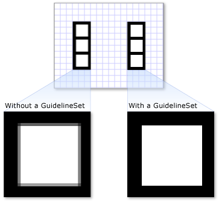

Практическое руководство. Применение объекта GuidelineSet к рисунку
В этом примере показано, как применить GuidelineSet для DrawingGroup.
DrawingGroup Класс является единственным типом Drawing с GuidelineSet свойство. Чтобы применить GuidelineSet к другому типу Drawing, добавьте его в DrawingGroup , а затем применить GuidelineSet для вашей DrawingGroup.
Пример
В следующем примере создается два DrawingGroup объекты, которые практически идентичны; единственное отличие заключается в: второй DrawingGroup имеет GuidelineSet и первый — нет.
На следующем рисунке показан результат выполнения этого примера. Так как два различия в отрисовке DrawingGroup объекты не очень заметны, части рисунков увеличены.

using System;
using System.Windows;
using System.Windows.Controls;
using System.Windows.Media;
using System.Windows.Media.Animation;
using System.Windows.Shapes;
namespace SDKSample
{
/// <summary>
/// This example shows how to apply a GuidelineSet to
/// a drawing.
/// </summary>
public class DrawingGroupGuidelineSetExample : Page
{
public DrawingGroupGuidelineSetExample()
{
//
// Create a DrawingGroup
// that has no guideline set
//
GeometryDrawing drawing1 = new GeometryDrawing(
Brushes.Black,
null,
new RectangleGeometry(new Rect(0,20,30,80))
);
GeometryGroup whiteRectangles = new GeometryGroup();
whiteRectangles.Children.Add(new RectangleGeometry(new Rect(5.5, 25, 20, 20)));
whiteRectangles.Children.Add(new RectangleGeometry(new Rect(5.5, 50, 20, 20)));
whiteRectangles.Children.Add(new RectangleGeometry(new Rect(5.5, 75, 20, 20)));
GeometryDrawing drawing2 = new GeometryDrawing(
Brushes.White,
null,
whiteRectangles
);
// Create a DrawingGroup
DrawingGroup drawingGroupWithoutGuidelines = new DrawingGroup();
drawingGroupWithoutGuidelines.Children.Add(drawing1);
drawingGroupWithoutGuidelines.Children.Add(drawing2);
// Use an Image control and a DrawingImage to
// display the drawing.
DrawingImage drawingImage01 = new DrawingImage(drawingGroupWithoutGuidelines);
// Freeze the DrawingImage for performance benefits.
drawingImage01.Freeze();
Image image01 = new Image();
image01.Source = drawingImage01;
image01.Stretch = Stretch.None;
image01.HorizontalAlignment = HorizontalAlignment.Left;
image01.Margin = new Thickness(10);
//
// Create another DrawingGroup and apply
// a blur effect to it.
//
// Create a clone of the first DrawingGroup.
DrawingGroup drawingGroupWithGuidelines =
drawingGroupWithoutGuidelines.Clone();
// Create a guideline set.
GuidelineSet guidelines = new GuidelineSet();
guidelines.GuidelinesX.Add(5.5);
guidelines.GuidelinesX.Add(25.5);
guidelines.GuidelinesY.Add(25);
guidelines.GuidelinesY.Add(50);
guidelines.GuidelinesY.Add(75);
// Apply it to the drawing group.
drawingGroupWithGuidelines.GuidelineSet = guidelines;
// Use another Image control and DrawingImage
// to display the drawing.
DrawingImage drawingImage02 = new DrawingImage(drawingGroupWithGuidelines);
// Freeze the DrawingImage for performance benefits.
drawingImage02.Freeze();
Image image02 = new Image();
image02.Source = drawingImage02;
image02.Stretch = Stretch.None;
image02.HorizontalAlignment = HorizontalAlignment.Left;
image02.Margin = new Thickness(50, 10, 10, 10);
StackPanel mainPanel = new StackPanel();
mainPanel.Orientation = Orientation.Horizontal;
mainPanel.HorizontalAlignment = HorizontalAlignment.Left;
mainPanel.Margin = new Thickness(20);
mainPanel.Children.Add(image01);
mainPanel.Children.Add(image02);
//
// Use a DrawingBrush to create a grid background.
//
GeometryDrawing backgroundRectangleDrawing =
new GeometryDrawing(
Brushes.White,
null,
new RectangleGeometry(new Rect(0,0,1,1))
);
PolyLineSegment backgroundLine1 = new PolyLineSegment();
backgroundLine1.Points.Add(new Point(1, 0));
backgroundLine1.Points.Add(new Point(1, 0.1));
backgroundLine1.Points.Add(new Point(0, 0.1));
PathFigure line1Figure = new PathFigure();
line1Figure.Segments.Add(backgroundLine1);
PathGeometry backgroundLine1Geometry = new PathGeometry();
backgroundLine1Geometry.Figures.Add(line1Figure);
GeometryDrawing backgroundLineDrawing1 = new GeometryDrawing(
new SolidColorBrush(Color.FromArgb(255,204,204,255)),
null,
backgroundLine1Geometry
);
PolyLineSegment backgroundLine2 = new PolyLineSegment();
backgroundLine2.Points.Add(new Point(0, 1));
backgroundLine2.Points.Add(new Point(0.1, 1));
backgroundLine2.Points.Add(new Point(0.1, 0));
PathFigure line2Figure = new PathFigure();
line2Figure.Segments.Add(backgroundLine2);
PathGeometry backgroundLine2Geometry = new PathGeometry();
backgroundLine2Geometry.Figures.Add(line2Figure);
GeometryDrawing backgroundLineDrawing2 = new GeometryDrawing(
new SolidColorBrush(Color.FromArgb(255, 204, 204, 255)),
null,
backgroundLine2Geometry
);
DrawingGroup backgroundGroup = new DrawingGroup();
backgroundGroup.Children.Add(backgroundRectangleDrawing);
backgroundGroup.Children.Add(backgroundLineDrawing1);
backgroundGroup.Children.Add(backgroundLineDrawing2);
DrawingBrush gridPatternBrush = new DrawingBrush(backgroundGroup);
gridPatternBrush.Viewport = new Rect(0, 0, 10, 10);
gridPatternBrush.ViewportUnits = BrushMappingMode.Absolute;
gridPatternBrush.TileMode = TileMode.Tile;
gridPatternBrush.Freeze();
Border mainBorder = new Border();
mainBorder.Background = gridPatternBrush;
mainBorder.BorderThickness = new Thickness(1);
mainBorder.BorderBrush = Brushes.Gray;
mainBorder.HorizontalAlignment = HorizontalAlignment.Left;
mainBorder.VerticalAlignment = VerticalAlignment.Top;
mainBorder.Margin = new Thickness(20);
mainBorder.Child = mainPanel;
//
// Add the items to the page.
//
this.Content = mainBorder;
this.Background = Brushes.White;
}
}
}
<Page
xmlns="http://schemas.microsoft.com/winfx/2006/xaml/presentation"
xmlns:x="http://schemas.microsoft.com/winfx/2006/xaml"
xmlns:PresentationOptions="http://schemas.microsoft.com/winfx/2006/xaml/presentation/options"
xmlns:mc="http://schemas.openxmlformats.org/markup-compatibility/2006"
mc:Ignorable="PresentationOptions">
<Border BorderThickness="1" BorderBrush="Gray"
HorizontalAlignment="Left" VerticalAlignment="Top"
Margin="20">
<StackPanel Margin="20" Orientation="Horizontal">
<Image Stretch="None" Margin="10">
<Image.Source>
<DrawingImage PresentationOptions:Freeze="True">
<DrawingImage.Drawing>
<!-- This DrawingGroup has no GuidelineSet. -->
<DrawingGroup>
<GeometryDrawing Brush="Black">
<GeometryDrawing.Geometry>
<RectangleGeometry Rect="0,20,30,80" />
</GeometryDrawing.Geometry>
</GeometryDrawing>
<GeometryDrawing Brush="White">
<GeometryDrawing.Geometry>
<GeometryGroup>
<RectangleGeometry Rect="5.5,25, 20,20" />
<RectangleGeometry Rect="5.5,50, 20,20" />
<RectangleGeometry Rect="5.5,75, 20,20" />
</GeometryGroup>
</GeometryDrawing.Geometry>
</GeometryDrawing>
</DrawingGroup>
</DrawingImage.Drawing>
</DrawingImage>
</Image.Source>
</Image>
<Image Stretch="None" Margin="50,10,10,10">
<Image.Source>
<DrawingImage PresentationOptions:Freeze="True">
<DrawingImage.Drawing>
<!-- This DrawingGroup has a GuidelineSet. -->
<DrawingGroup>
<GeometryDrawing Brush="Black">
<GeometryDrawing.Geometry>
<RectangleGeometry Rect="0,20,30,80" />
</GeometryDrawing.Geometry>
</GeometryDrawing>
<GeometryDrawing Brush="White">
<GeometryDrawing.Geometry>
<GeometryGroup>
<RectangleGeometry Rect="5.5,25, 20,20" />
<RectangleGeometry Rect="5.5,50, 20,20" />
<RectangleGeometry Rect="5.5,75, 20,20" />
</GeometryGroup>
</GeometryDrawing.Geometry>
</GeometryDrawing>
<DrawingGroup.GuidelineSet>
<!-- The GuidelineSet -->
<GuidelineSet
GuidelinesX="5.5,25.5" GuidelinesY="25,50,75" />
</DrawingGroup.GuidelineSet>
</DrawingGroup>
</DrawingImage.Drawing>
</DrawingImage>
</Image.Source>
</Image>
</StackPanel>
<Border.Background>
<DrawingBrush Viewport="0,0,10,10" ViewportUnits="Absolute" TileMode="Tile"
PresentationOptions:Freeze="True">
<DrawingBrush.Drawing>
<DrawingGroup>
<GeometryDrawing Brush="White">
<GeometryDrawing.Geometry>
<RectangleGeometry Rect="0,0,1,1" />
</GeometryDrawing.Geometry>
</GeometryDrawing>
<GeometryDrawing Geometry="M0,0 L1,0 1,0.1, 0,0.1Z " Brush="#CCCCFF" />
<GeometryDrawing Geometry="M0,0 L0,1 0.1,1, 0.1,0Z" Brush="#CCCCFF" />
</DrawingGroup>
</DrawingBrush.Drawing>
</DrawingBrush>
</Border.Background>
</Border>
</Page>